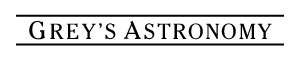

Grey’s Astronomy
The human body is an incredibly complex system. We don’t entirely know how it works. There are mysteries around every corner.
A spaceship is a lot like the human body. Cells rushing around from place to place, doing their jobs to keep us up and running. But there are no mysteries. Everything works the way it was designed to.
Until it doesn’t.

The metal floor was cold under Meredith’s bare feet. She shoved them into her slippers and stood up from her bunk.
“It’s definitely not time yet. Where are you going?” came a voice from behind her. She turned to gaze at Derek, whose face was pressed into his pillow. His salt-and-pepper hair was sticking up at a jaunty angle.
“I have to pee,” she whispered.
In the bathroom, she stared down at the water in the sink as it circled the drain. Then, she met her own eyes in the mirror.
“What are you looking at?”
Abruptly, she was on the floor. No, the wall. That was probably a bad noise her shoulder had made…
When she came to, she knew her shoulder was dislocated. She recognized the loose feeling and the dull, steady pain from when she had broken her toe on a doorframe when she was twelve.
She lay crumpled in a heap on the floor (actually the floor this time), with her busted arm pinned under her torso.
What on Earth was that?